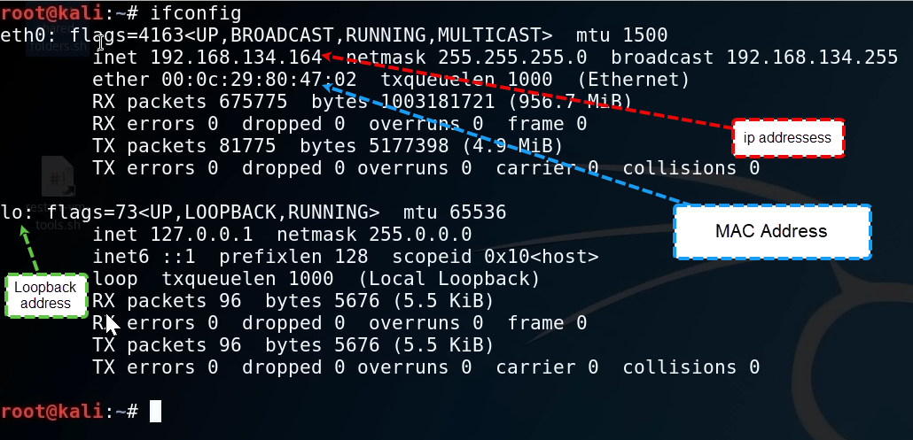

ifconfig

if your machine has a wireless adapter or if you want to do wireless penetration testing, you're going to need iwconfig. And you should not expect to see anaything on this at
the moment, unless your are using a laptop, then actually you might some configuration
iwconfig

if i ping my own router, i would get replies back(for ever) until i type CTRL+C to stop it
ping 192.168.15.1

ping something that is not in my network, and i dont get any reply back.
ping 192.168.16.1

show the ip address it talks to and the MAC-Address associated with with
arp -a

show the active connections that are running on your machine. In penetration testing this can be used to see if a machin is talking to somebody else.
So you can know what that machine is associated with, and is it talking to something on a port.
netstat -ano

print your routing table(tells you where your trafic exits)
route

how can we understand this routing table?
For this VM the traffic is exiting on 192.168.134.0
So traffic goes out of this 0.0.0.0 gateway in this range(192.168.134.0)
So when it goest out fo this gateway, it'doing NAT(Network Address Translation) and it's running off my computer.
it's important to know route because there could be a machine that you're attacking that has multiple routes, so you might see a 134(192.168.134.) and a 135(192.168.135.)
because it has two Nicks inside of it. So it's actually talking to a completely different network that you didn't know existed, so you might have been attacking one network.
And the 134 range and then 135 just out there and this computer can talk to both. And until that point you had no idea.
And that's the idea of called pivoting when you switch in network from one to the other, but you're using a machine.